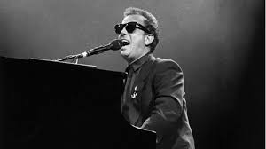

Billy Joel is an American singer/songwriter. He is advertised as a solo artist and by his name alone because he is the sole composer and lyricist of all his own works. He has had the same backing band members for the majority of his career. The band has accompanied him on both live performances and in-studio album recordings.
Billy Joel in the early days formed band, "Attila" with other unknown musicians. This musical act was a failure and disappeard into obscurity shortly after its birth. Notable, in my opinion, however on this one ond only self-titled record was the last track titled, "Four 'O Clock in the Morning" which resemebles some of his successful earlier tracks on albums such as "52nd Street" and "Piano Man".
Follow him on Facebook: Billy Joel's Facebook Page
Movin' Out